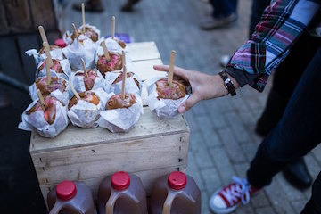

WHAT TO EXPECT
Vendor Directory
All food classification and price ranges ($= under $10, $$=11–30) are based on that of Yelp's.
Silo Food Truck: Southern Food ($$)
Kettle Corn Shoppe: Kettle Corn ($)
Let's Roll Gourmet Egg Rolls: Breakfast Food & Burgers ($$)
New Delhi Diamonds Indian Restaurant: Indian ($$)
OmNomNomelettes: Breakfast & Brunch ($$)
Sangam Indian Cuisine: Indian ($$)
PDR Catering: Deli-Style, Home-style cooking ($)
On The Street Pitas: Gyros, Pitas ($)
B&B Kettle Korn: Kettle Corn ($)
Thai Basil Restaurant: Thai ($$)
Monk on the Commons: Bar, American (New) ($$)
Tibetan Momo Bar: Japanese, Tibetan ($)
Bella Pizza: Pizza, Pasta, Wings ($)
The Center Cafe: Sandwiches ($)
Coltivare: American (New) ($$)
Dos Amigos: Tacos, Quesadillas ($)
Macarollin: Mac & Cheese ($)
Ithaca Gateway BBQ Restaurant: Barbeque ($)
Silent City Uprising Coffee: Coffee & Tea ($)